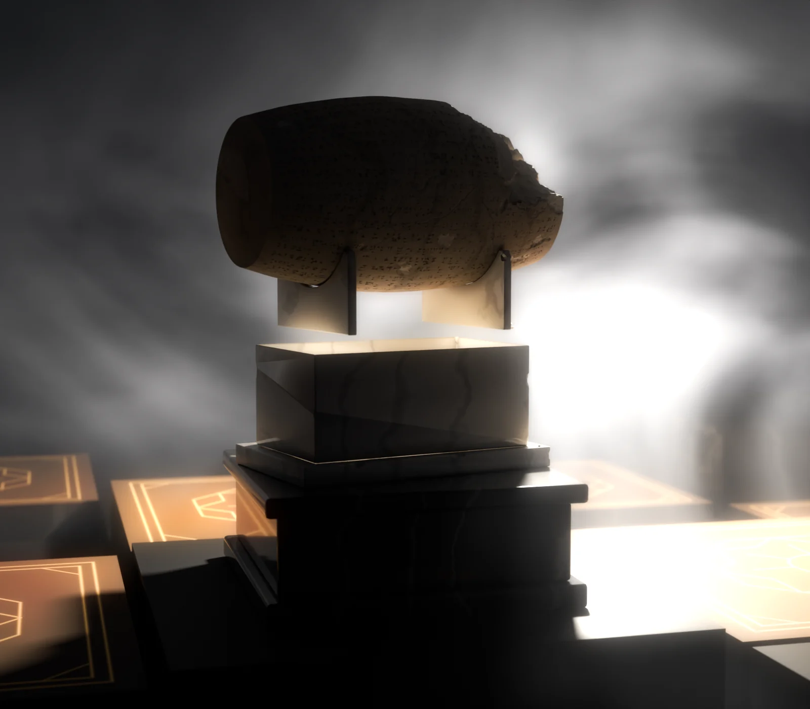

Software Developer
Selected work
06 projects
Cyrus
Bilingual Arabic and English regulatory documents have to be classified, with every control around them able to survive an audit.
A multi-tenant ontology platform that classifies those documents and UAE Ministry of Health price lists, with a Neo4j graph and local embeddings for semantic search.
Thirteen security layers and a hash-chained audit trail hold it to 21 CFR Part 11, SOC 2 Type II and ISO 27001. It is built for pharma first and for any industry after that.
Zagros
Regulated and air-gapped teams can't hand identity to an outside provider, or trust any single key-holder.
Multi-tenant identity and governance with no external identity provider in the loop. Passkeys, email OTP and passwords are all verified in-instance, authorization runs on Cerbos policies, and the instance is brought up through a sealed Genesis ceremony with K-of-N constitutional keys.
No single key can run it, and the same code runs local, on-premise, air-gapped or managed. This is a private repository, so there is no public source.
OnePharma
The product surface is what the whole platform is judged on, and it has to sit on a graph and an LLM layer it never needs to see.
The product surface, built as CTO. Next.js and strict TypeScript with passwordless sign-in, a GraphQL decision service in front of a Neo4j activity graph, and a pluggable LLM layer that runs against a hosted gateway or a self-hosted model.
The product does not know which model is answering, so the model can change without the product changing.
Black Pearl
CNC rigs are hard to demonstrate, test or build software for without the machine in the room.
Live telemetry over WebSocket and configuration over REST, behind a single connection interface with swappable simulated and real machine implementations.
The whole rig demonstrates in a browser with no hardware attached, and the same build drives the actual machine on the factory floor.
Falah
A budget only helps if it stays current without constant data entry.
A budgeting app that fills itself in. It links bank accounts through open banking, finds subscriptions in email receipts with consent, and answers questions about your money in plain words. A Swift and SwiftUI client on a Supabase backend of Postgres and edge functions, owned from schema to screen.
There is little to type, and the budget stays current. It is not on the App Store yet.
Network Intrusion Detection
IoT networks are an easy target for botnets, and detection has to separate attack traffic from normal traffic.
A comparison of CNN, 1DCNN and hybrid CNN-RNN models for detecting botnet traffic. The CNN-RNN performed best: 99.34% accuracy on N-BaIoT with TCP removed, and 98.23% on NSL-KDD.
Co-authored and published by Springer in the NEW2AN / ruSMART 2023 proceedings.
Deep Learning for Preventing Botnet Attacks on IoT
NEW2AN / ruSMART 2023, Springer LNCS, pp. 37-46. The NSL-KDD model runs live in your browser on the case-study page.
Bring me your
hardest problem.
Build with me
Ontologies, agentic systems, AI governance. From first diagram to production.